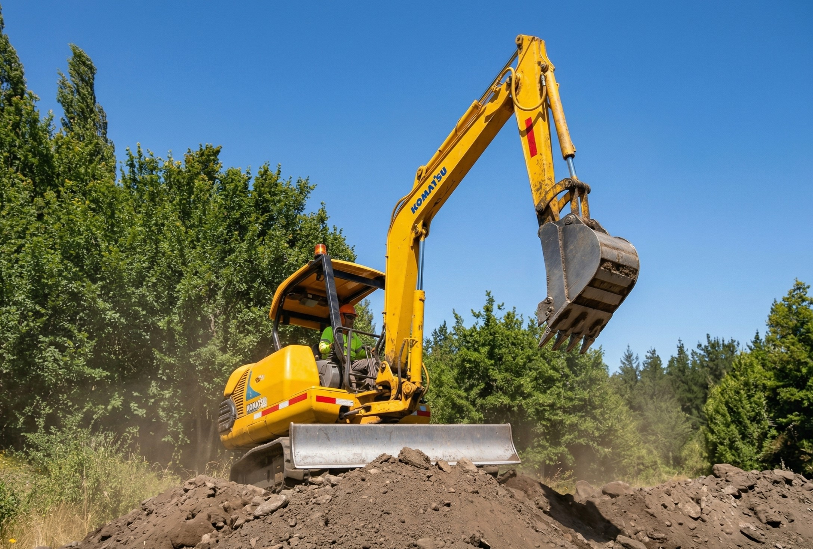
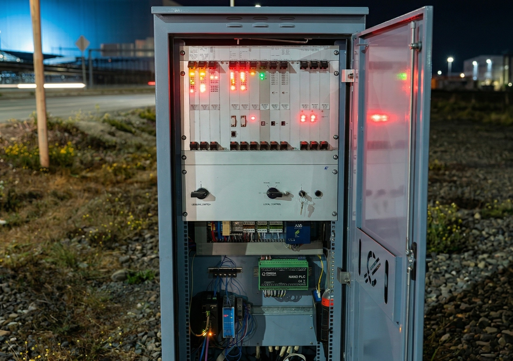
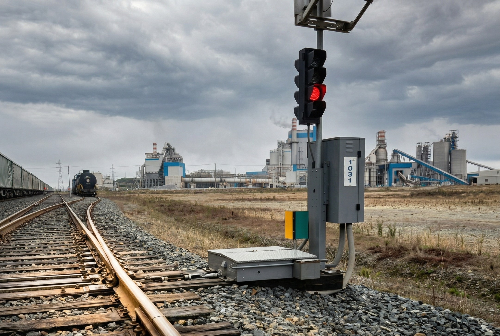
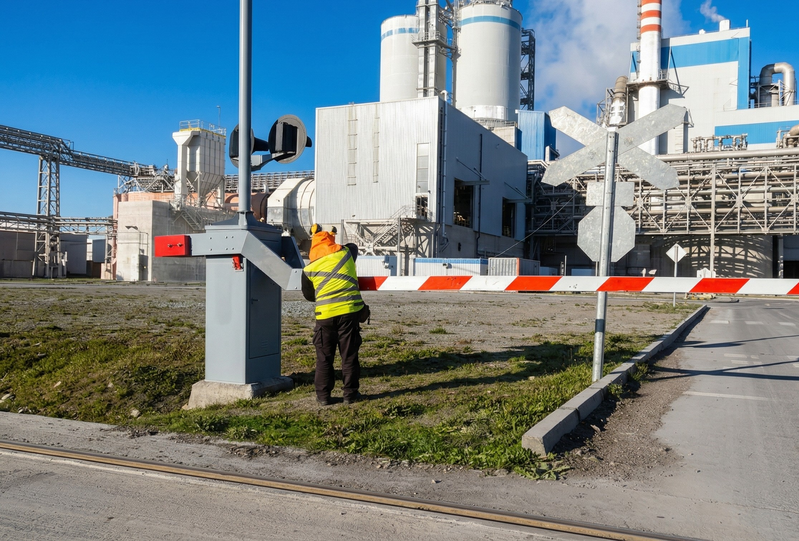
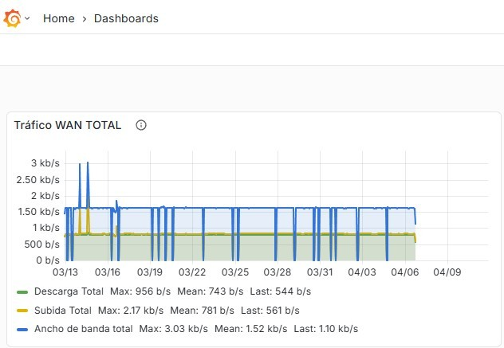

Sánchez e Hijos SpA
Especialistas en mantenimiento integral de sistemas ferroviarios.
Garantizando la seguridad y continuidad operativa de la infraestructura ferroviaria.
Nuestros Servicios

Obras Civiles Menores
Reparación y mantenimiento de infraestructura civil en entornos ferroviarios, asegurando condiciones óptimas de operación.

Control Automático
Reparación y mantenimiento de sistemas de control automático para la gestión segura del tráfico ferroviario.

Máquinas de Cambio
Mantenimiento especializado de máquinas de cambio de vías, garantizando desvíos seguros y confiables.

Barreras Automáticas
Mantenimiento de sistemas de protección con barreras automáticas en pasos a nivel, asegurando la seguridad de cruces ferroviarios.

Telemetría
Monitoreo remoto de sistemas ferroviarios mediante telemetría, permitiendo diagnóstico y respuesta en tiempo real.
¿Por qué elegirnos?
- Experiencia comprobada: Años de trayectoria en mantenimiento de infraestructura ferroviaria crítica.
- Equipo técnico especializado: Profesionales capacitados en sistemas de señalización, control y telemetría ferroviaria.
- Cobertura integral: Desde obras civiles menores hasta monitoreo remoto, cubrimos todo el ciclo de mantenimiento.
- Compromiso con la seguridad: La seguridad operativa es nuestra prioridad en cada intervención.
¿Necesita mantenimiento ferroviario confiable?
Contáctenos y conversemos sobre cómo podemos ayudarle a mantener su infraestructura operativa y segura.
ContáctenosTrabajamos con los principales operadores ferroviarios del país. Conozca más sobre el sistema ferroviario chileno en Empresa de los Ferrocarriles del Estado (EFE) .